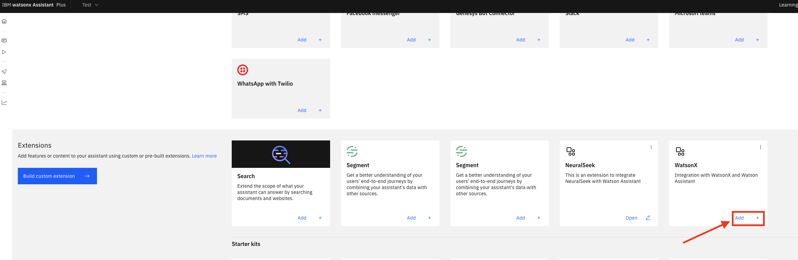

watsonx Assistant Integrations
Overview
Below you can follow a step-by-step walkthrough of how to integrate watsonx Assistant with Watson Discovery and watsonx.ai. These integrations will allow you to utilize your knowledge base in Watson Discovery and use watsonx.ai LLMs to receive natural language responses.
Create Custom watsonx.ai Extension in watsonx Assistant
Step 1: Download OpenAPI File
First, download the watsonx-openapi.json OpenAPI file with the button below.
Step 2: Build Custom Extension
-
Navigate back to your Watsonx Assistant to the Integrations page.
-
Scroll back down and click on the Build custom extension button.
-
Click Next and give the extension a name and description. Click Next and then upload the OpenAPI file you downloaded from the GitHub repository.
-
Click Next and then Finish. You should now see a Watsonx.ai custom extension. Click Add. 
Step 3: Authenticate Custom Extension
Retrieve API Key
-
Click Add again and Next. From the Authentication type drop-down select OAuth 2.0. To get this API key go to IBM Cloud and click on the Manage drop-down on the top navigation bar and select Access (IAM).

-
Click on API keys on the left and create an API key. Make sure you save the API key for future use because you will not be able to view the API key again.
-
Go back to the Watsonx Assistant page and paste that API key in the text box. Click Next and Finish. Your custom Watsonx.ai extension has now been created.
Create Custom Watson Discovery Extension in watsonx Assistant
Step 1: Download OpenAPI File
- Download the
watson-discover-query-openapi.jsonOpenAPI file with the button below.
Step 2: Build Custom Extension
-
Then, navigate to the
Integrationstab on your Watsonx Assistant page. -
Scroll down and click on the Build custom extension button.
-
Click Next and then name the extension “Watson Discovery.” Click Next again and then upload the OpenAPI json file that you previously downloaded from the GitHub repository.
-
Click Next and then Finish. You should now see a
Watson Discoverytile. Click Add.
Step 3: Authenticate Custom Extension
-
Click Add again and then Next. On the authentication page, select Basic auth for the authentication type. You will then need to input 3 pieces of information:
- username
- password
- discovery URL
-
Under username you can input
apikey
Retrieve API Key and Discovery URL
-
For the
passwordanddiscovery URL, you will need to navigate to yourWatson Discoveryinstance. Go to your IBM Cloud account, click on the hamburger menu in the top left, and click on Resource List.
-
Open up the AI/Machine Learning section and click on your discovery instance and you should see this page.

-
Copy both the API key and URL and paste it on the extensions page of your watsonx Assistant instance. Paste the API key into the password text box and paste the URL in the discovery URL text box at the bottom of the page
-
Make sure that when you paste the URL into the discovery URL text box that you take out the ”https://” part of the URL.
-
Click Next, Finish, and Close. Our last step to complete the watsonx Assistant integration with watsonx.ai and Watson Discovery will require us to create and configure some actions.
Configure Discovery/watsonx.ai Actions
Step 1: Download Actions JSON File
- Download the
discovery-watsonx-actions.jsonfile from the button below.
Step 2: Upload Actions JSON File to Assistant
-
Go back to the watsonx Assistant page and navigate to the Actions tab from the menu on the left.

-
Click on the Settings icon in the top right corner.
-
Navigate to the Upload/Download tab and click on the box under Upload to upload the file you just downloaded from GitHub. Then, click the blue Upload button and the Upload and replace button. Finally, click Close in the top right.
-
You should now see 3 actions created for you from the json file you just uploaded: Generate Answer, Invoke watsonx generation API, and Search.
You'll see a red status symbol for both the Invoke watsonx generation API and Search actions. We'll need to go into each action and fix the errors. Before we do that, let's go set some values for some of the variables created.
Step 3: Set Session Variables
- On the left hand side under Variables click on Created by you.
There's 2 variables that we want to change: discovery_project_id and watsonx_project_id.
Retrieve Discovery Project ID
-
Let's click on discovery_project_id. To get the project ID, navigate to your Watson Discovery instance. Select your project that includes the documents/information needed and navigate to the Integrate and Deploy page from the menu on the left.

-
Go to the API information tab and copy the Project ID.

-
Now, go back to your watsonx Assistant instance and paste the project ID in the Initial value text box. Click Save.

Retrieve watsonx Project ID
-
Now, let's click on watsonx_project_id. To get this, navigate to your watsonx instance and select the project you created. Under the Manage tab you should be able to find the project ID. Copy that and go back to the watsonx Assistant page.

-
Paste this value into the Initial value box similar to what you did for the discovery project ID. Click Save.

Now that we've set these variables, let's go back to our actions.
Step 4: Configure Actions
- This can be found if you click Created by you under All items.
Search
-
Let's step into the Search action first. Click on Search.
-
You'll see that step 5 on the left hand side is red. Click on that step. you should see a message that Extension not fully configured.

-
Let's click on Edit extension under that message.
-
For the extension, we're going to use our Watson Discovery extension. And we're going to use the Query a project operation.
-
We should see 2 parameters for this operation: version and project_id. We're going to set version to discovery_date_version and set project_id to discovery_project_id. To reach these values to set the parameters to, click on the drop down box to the right of To and click on Session variables. You should be able to find both discovery_date_version and discovery_project_id. Once those 2 parameters have been set, click Apply.

-
Make sure to save by clicking the save icon in the top right. Then, exit by clicking the X in the top right as well.
Invoke watsonx generation API
-
Now, let's go into the Invoke watsonx generation API action.
-
You'll see that step 1 is red. Go ahead and click on that. You'll see that there's the same error messages as the other action.
-
Click on Edit extension.
-
This time for the extension, we're going to use our watsonx.ai extension. And then we're going to use the Generation operation.
-
You should see 4 parameters that we need to set. Set version to watsonx_api_version, input to model_input, model_id to model_id, and project_id to watonsx_project_id. All of these values can be found under session variables similar to before. Finally, click Apply.
-
Make sure to save by clicking the save icon in the top right. Then, exit by clicking the X in the top right as well.
Optional: Configure LLM Model
If you wanted to play around with/test different models with watsonx.ai, all you need to do is go back to the variables Created by you page. The variable model_id is the one that denotes which model to use. So, if you edit that to include the provider and model version (ex. IBM and granite-13b-chat-v2) you will be able to use that model.